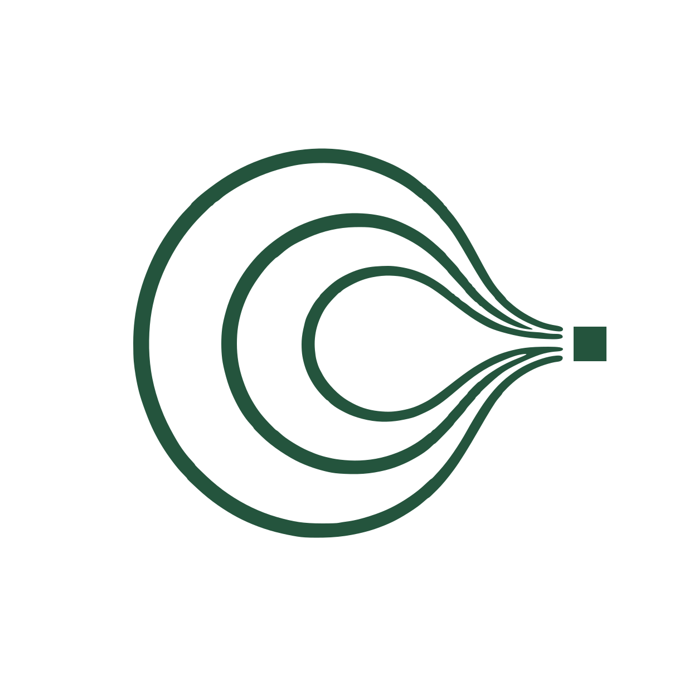

As autonomous software becomes the buyer of work, aecon enables traditional businesses to package their services into machine-callable products that AI agents can hire and settle directly.
For 30 years, web services monetized human attention via ads and referrals. When AI agents summarize and execute tasks directly, attention hits zero. The only surviving monetization model is charging the agent at the millisecond of the request.

Software is already paying software directly. Machine micropayments have arrived and scaled past 100M transactions on Base.
x402 protocol metrics, 30 days to 25 Aug 2026. Chainalysis, Jun 2026.
The payment rails exist. But at an average ticket of 32 cents, agents only buy raw tokens and scraper proxies. They cannot buy commercial services because no market coordinates price, delivery, and trust.
Four structural shifts are arriving simultaneously. They point to one inevitable outcome: a new economic coordination layer.
aecon core investment thesis, September 2026.
An agent working a task decides for itself which tools it needs mid-execution. It does not wait for a developer to integrate an API in advance.
Protocols like x402 let software meet a price and settle instantly on-chain. Software moved from choosing tools to buying them on demand.
When there is a buyer that never sleeps and pays per call, every business with data or capability has an incentive to expose it to software.
The rails move money; gateways pass requests. But nobody coordinates binding price discovery, verified delivery, or reputation.
Just as App Stores turned smartphone users into buyers, autonomous agents turn software into the primary consumer of services. aecon is the market that coordinates them.
Every platform shift forces capability to be re-packaged for the new buyer, and the platform that enables the transition captures the market.
Commercial history: Web E-commerce, App Stores, Programmatic Ad Exchanges.
| The New Buyer | How Capability Was Sold | The Packaging Transition | The Platform That Won |
|---|---|---|---|
| Web Shoppers (1995) | Physical retail & mail catalogs | Inventory re-packaged as web pages & online checkout | Amazon & Shopify |
| Smartphone Users (2008) | Desktop software & CD-ROMs | Software re-packaged as mobile-native apps | Apple & Google App Stores |
| Programmatic Bots (2012) | Direct insertion orders & emails | Ad inventory re-packaged into real-time API bids | Doubleclick & Ad Exchanges |
| Autonomous Agents (Today) | Phone calls, PDFs & 30-day terms | Services re-packaged as machine-callable Tools | aecon (Agentic Economy) |
Payment rails only move money. aecon is the infrastructure that allows traditional businesses to turn their human capability into machine-callable productised services.
Markets require five pillars before supply switches on. In 2026, the agentic economy has rails and endpoints, but lacks the core commercial layer.
Five-things market framework: eBay, App Store, Airbnb, Upwork.
aecon delivers the three missing pieces: binding quotes before invocation, cryptographic delivery verification, and reputation scores that track real execution.
Services cannot be traded by machines as vague websites or opaque LLM prompts. They must be packaged as bounded, callable Tools.
aecon Tool schema specification.
Crucial dynamic: the Tool contract works whether a person performs the work today or an automated model fulfills it tomorrow. The buyer receives the exact same schema, at the exact same price, with verified evidence.
Shoal Research and Cloudflare proved that static content loses pricing power instantly. Only three categories of supply can sustain machine monetization.
Shoal Research, "How AI Is Breaking the Internet Economy", Sep 2026.
Real-time order books, power grid dispatch, live shipping rates, sub-second telemetry. An LLM cannot answer today's state from last month's training weights.
Statutory land titles, corporate share registers, court filings, private market cap tables. Information that never touches the open web and cannot be scraped.
Fire engineering reviews, legal precedent opinions, geotechnical sign-offs. Outcomes that require licensed human accountability and professional standing.
aecon deliberately ignores generic web scraping and static articles. We anchor our marketplace entirely on the three categories that models cannot absorb for free.
A national economy is the exact right size to prove a complete market of agents buying from suppliers runs as ordinary commerce.
ABS Business Indicators 2025; Gartner Cloud Forecast 2025.
Australia is a nation of credentialed specialists: surveyors, labs, planners, engineers. Today, their capability is stranded in local postcodes. By structuring them as callable Tools, aecon turns an entire national economy into programmatic supply.
The transaction engine is built and verified. The 2026 milestone is the first purchase resolution: executing the first complete trade between strangers.
Verified repository state, Sep 2026. START_LINE.md criteria.
19-command CLI, MCP endpoint, x402 verification, double-entry ledger. All operational in test environments.
Landgate titles, ASIC registers, DWER contaminated sites, AEMO grid dispatch. Real data with statutory standing.
One outside firm converts its capability into a Tool, and a stranger's software buys it end-to-end.
A thesis is only as strong as its kill conditions. Here are the three structural tests that determine whether this market forms.
australia.md §8 failure modes and Shoal Research 2026 market realities.
Every parallel in history shows that exchanges take 3 to 5 years to mature. We test these three conditions across 10 core providers in 12 months.
Pre-seed funding to execute the first 1,000 commercial trades across 10 core Australian statutory and professional providers.
The rails move money. aecon enables the supply. We are raising to turn it on.